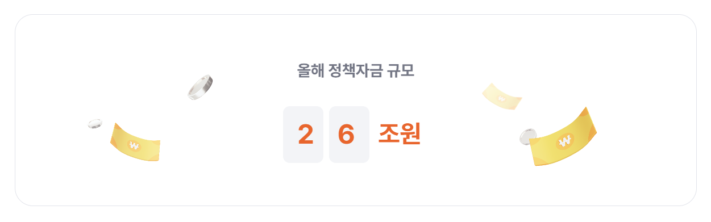
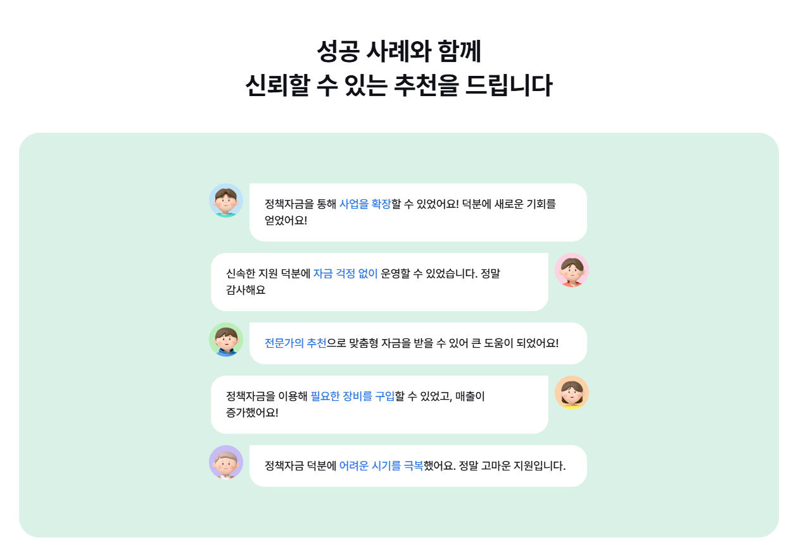

서비스업
“거래처 미정산으로 마음이 급했는데
많은 도움됐어요”
“거래처 미정산으로 마음이 급했는데
많은 도움됐어요”
“일만 열심히 해왔지
이런 자금이 있는지 몰랐어요”
“공장매입 또는 신축할 계획이 있었어요
부담을 덜고 진행하였습니다”
“일일이 챙기기 어려웠는데,
4주만에 승인 받았어요”
“인건비 걱정이 가장 컸는데
너무 다행이에요”
“매출보다 대출이 많아서 힘들었어요
덕분에 한숨 돌렸습니다”

사업의 상황에 맞춰 자금의 목적과 준비 방향을 살펴봅니다.
일상적인 사업 운영에 필요한 자금과 매출 현황을 함께 살펴봅니다.
설비 도입과 사업장 확장 계획에 맞춰 준비 방향을 점검합니다.
부결 기관과 신청 이력을 확인하고 보완할 부분을 함께 찾습니다.
업종과 매출, 부결 이력을
간단히 알려주세요.
입력 매출의 30%로 계산한
참고 예상 금액을 확인해요.
카카오채널을 추가하고
상담 예약으로 이동해요.
원하는 날짜와 시간으로
무료상담을 예약해요.

입력한 매출의 30%를 계산한 참고 금액입니다. 실제 대출 가능 여부나 한도를 조회하지 않으며 승인 금액을 보장하지 않습니다.
부결 이력을 선택하고 상담을 신청할 수 있습니다. 실제 상담에서는 신청 당시 상황과 보완할 자료를 함께 점검합니다.
사업 현황, 자금 목적, 기존 신청 이력과 준비 방향을 점검하는 상담을 진행합니다.